WTT- Armory
- Downloads
- 239,982
- Favourites
- 251
- Mod lists
- 434
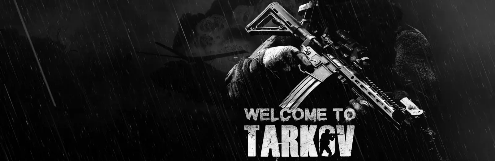
The WTT Armory series returns to SPT 4.0
The largest WTT standalone release from the WTT Team & Allies featuring:
-
50+ weapons
-
A countless amount of attachments
-
Custom quests
-
Unique “Boss” weapon variants pushed to boss loadouts
-
Loose loot spawns hand placed around the world
-
1,000+ combined man hours spread among 11 WTT developers and many WTT friends.
A Fresh Coat of Paint
Many of the familiar weapons you’ve seen from the armory series in the past have received a fresh coat of paint. In many cases, these weapons have been completely remastered with new models, textures, sounds, and even new attachments. Over time, our skills and knowledge have improved, and we’ve made sure to incorporate that into our weapons.
In addition to remastering old weapons, we’ve also added several new weapons and attachments to the official Armory roster.
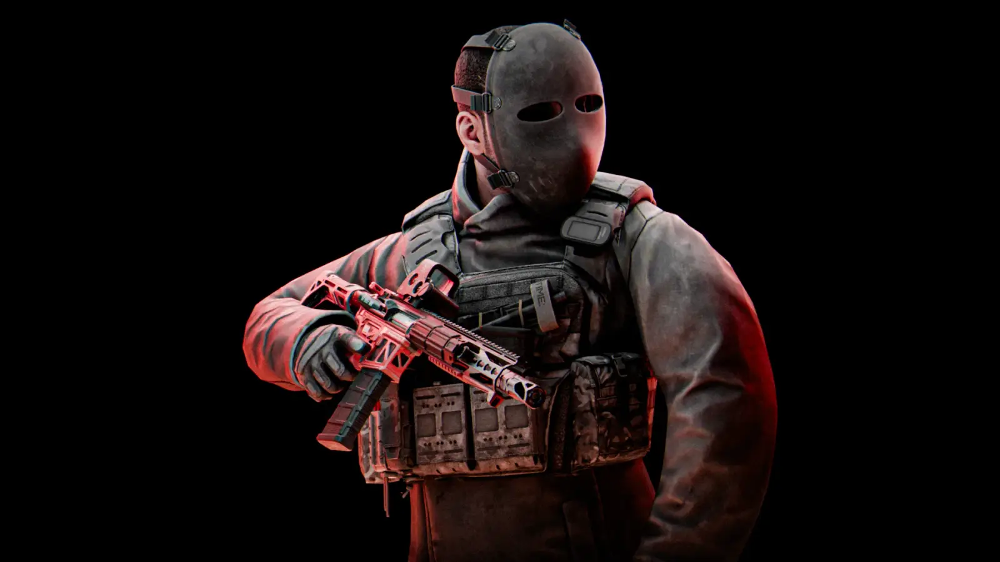
World Immersion - Traders / Loot Spawns / Boss Loadouts
While WTT Armory weapons have always been available through traders, we’ve gone the extra lengths to develop a system to allow these weapons to spawn in the world in hand placed locations on each map. Can you find all of the locations? Let the scavenger hunt begin…
In addition to loose loot spawns, we’ve also created and pushed unique variants of weapons to boss loadouts. Now you’ll have a chance of encountering one of these rare unique weapons from defeating a boss.
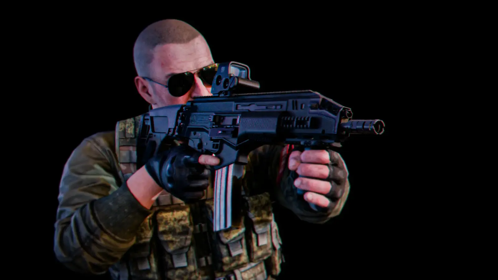
Disclaimers & Other Information
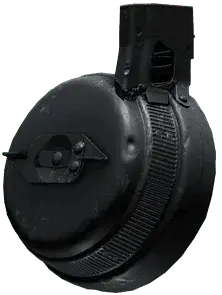
The original Little Drummer Boy magazines have been incorporated into WTT Armory and can be found on the ragfair for a price…
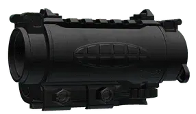
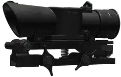
New custom optics have been incorporated into WTT Armory and can be found on the ragfair.
The SPT 3.11 version of this mod requires Virtuals Custom Quest Loader for the custom quests to work properly!
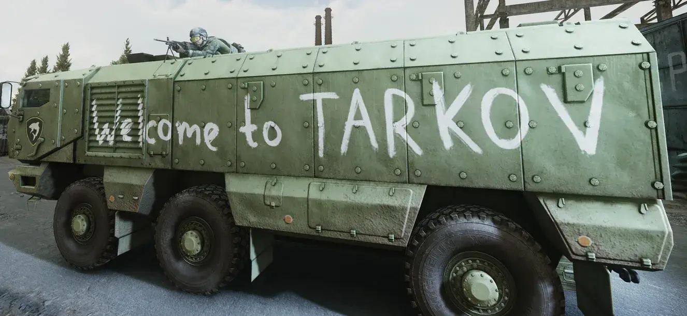
Help support our team!
Any funds donated will be put towards purchasing more assets for WTT!
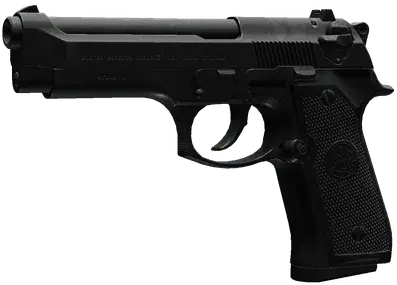
Beretta 92FS
Caliber: 9x19mm
Trader: Jaeger
World Spawn: Ground Zero
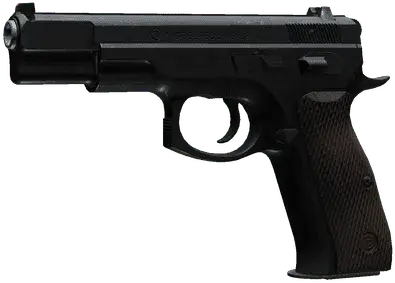
CZ75B
Caliber: 9x19mm
Trader: Skier
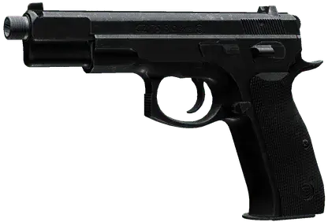
CZ75B Omega
Caliber: 9x19mm
Trader: Mechanic
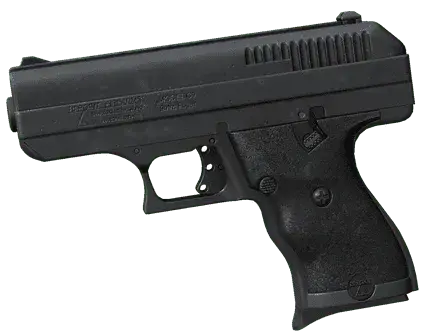
HI-Point C9
Caliber: 9x19mm
Trader: Skier
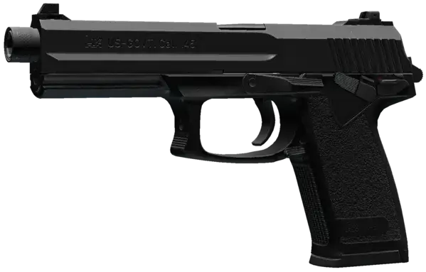
HK MK23
Caliber: .45 ACP
Trader: Peacekeeper
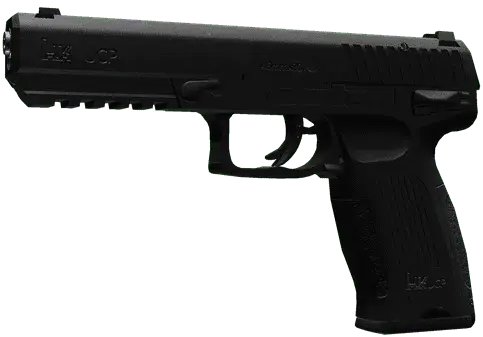
HK UCP
Caliber: 4.6x30mm
Trader: Mechanic
World Spawn: Interchange
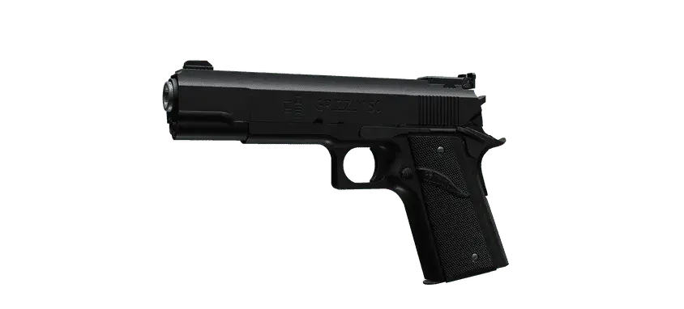
LAR GRIZZLY MK5
Caliber: .50AE
Trader: Jaeger
World Spawn: Interchange
Unique Boss Variant Exists
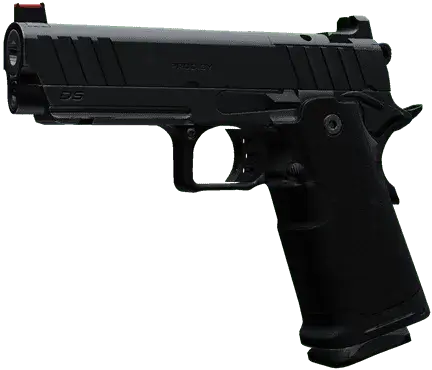
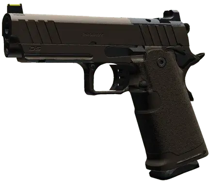
Springfield Armory Prodigy
Caliber: 9x19mm
Trader: Mechanic
World Spawn: Labs
SR-2 UDAV
Caliber: 9x21mm
Trader: Prapor
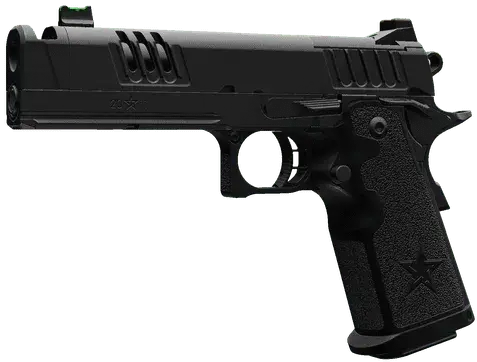
Staccato XC
Caliber: 9x19mm
Trader: Mechanic
Quest Locked
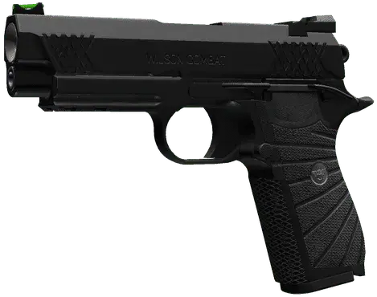
Wilson Combat EDC X9
Caliber: 9x19mm
Trader: Mechanic
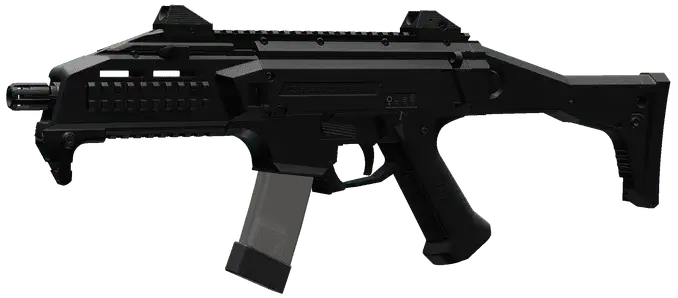
CZ Scorpion EVO 3 A1
Caliber 9x19mm
Trader: Skier
World Spawn: Interchange
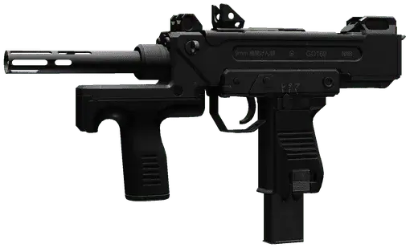
Minebea PM-9
Caliber: 9x19mm
Trader: Skier
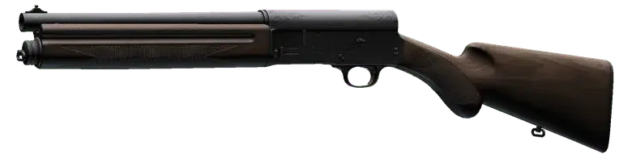
Browning Auto-5
Caliber: 12Ga
Trader: Jaeger
World Spawn: Streets
Unique Boss Variant Exists
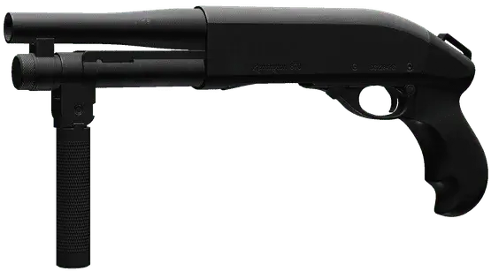
Serbu Super Shorty
Caliber: 12Ga
Trader: Mechanic
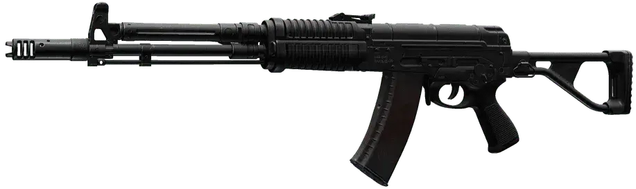
AEK-971
Caliber: 5.45x39mm
Trader: Prapor
World Spawn: Streets
Quest Locked
Unique Boss Variant Exists
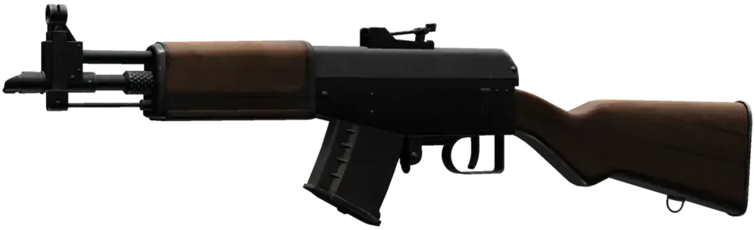
AG-042
Caliber: 5.45x39mm
Trader: Prapor
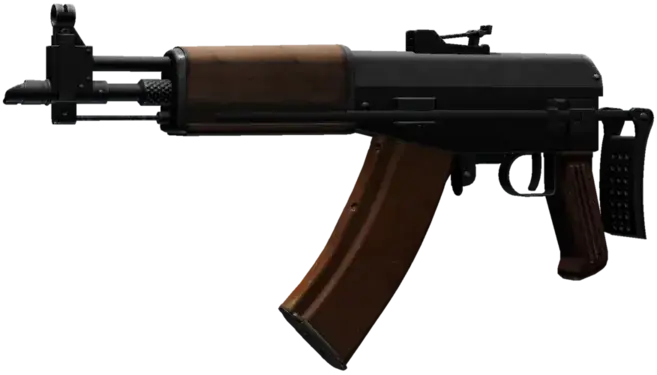
AG-043
Caliber: 5.45x39mm
Trader: Prapor
World Spawn: Ground Zero
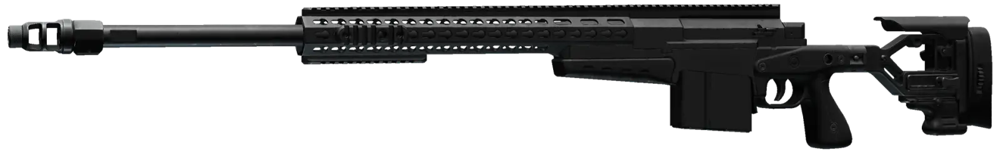
AI AXMC
Caliber: .300 Winchester Magnum
Trader: Jaeger
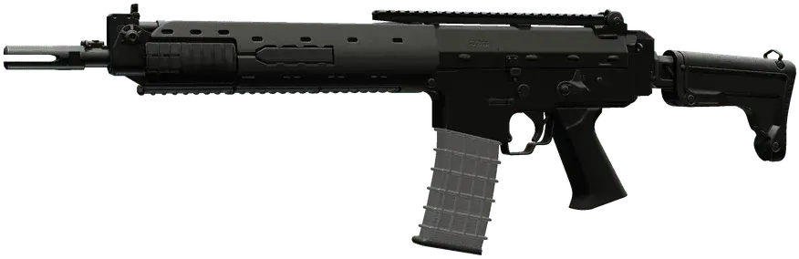
Bofors AK5C
Caliber: 5.56x45mm
Trader: Peacekeeper
World Spawn: Shoreline
Quest Locked
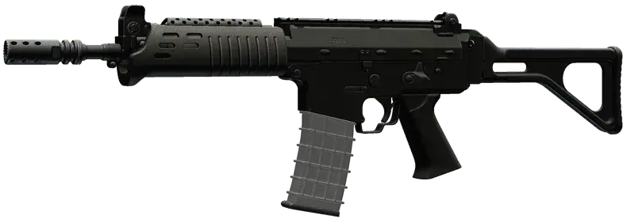
Bofors AK5D
Caliber: 5.56x45mm
Trader: Peacekeeper
Quest Locked
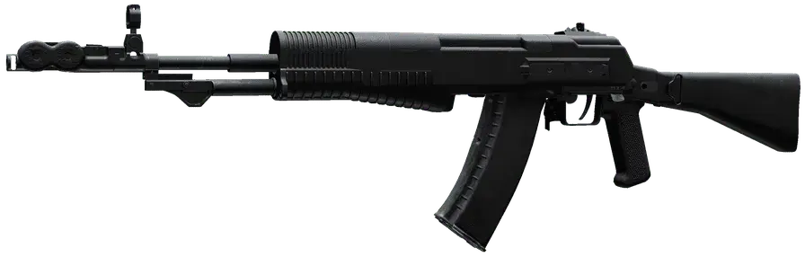
AN-94
Caliber: 5.45x39mm
Trader: Prapor
World Spawn: Woods
Quest Locked
Unique Boss Variant Exists
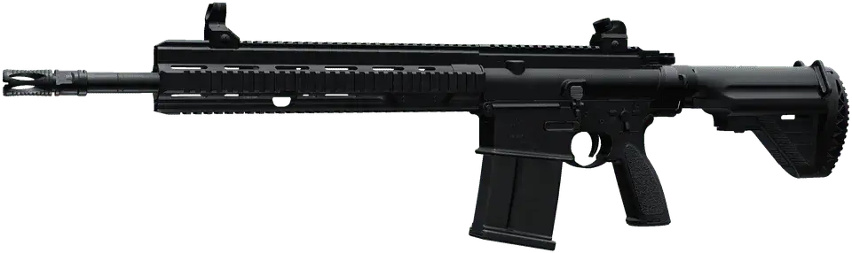
HK 417
Caliber: 7.62x51mm
Trader: Mechanic
World Spawn: Labs
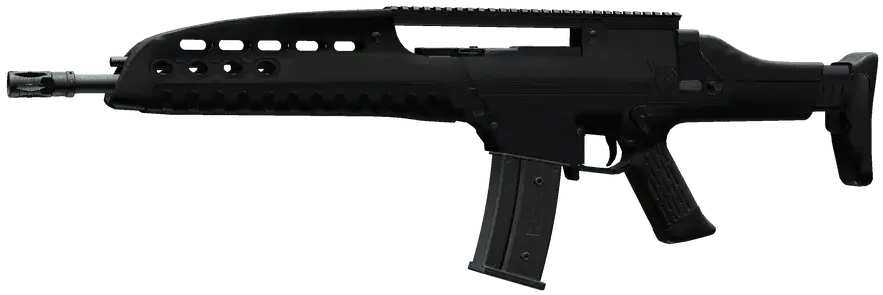
HK XM8
Caliber: 5.56x45mm
Trader: Skier
World Spawn: Labs
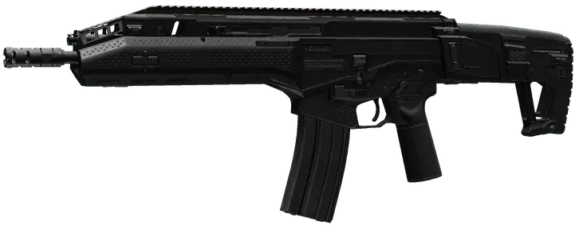
IWI Carmel
Caliber: 5.56x45mm
Trader: Skier
World Spawn: Lighthouse
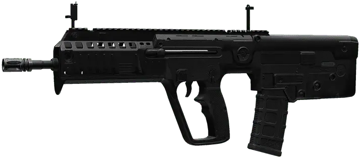
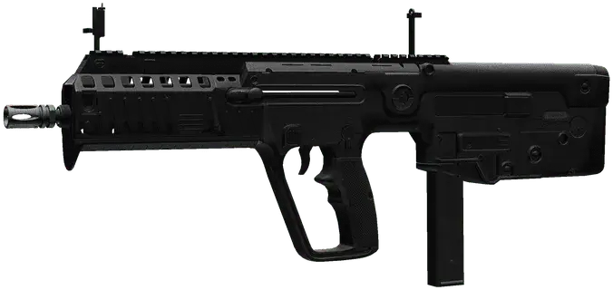
IWI Tavor X95
Caliber: 5.56x45mm & 9x19mm variants
Trader: Skier
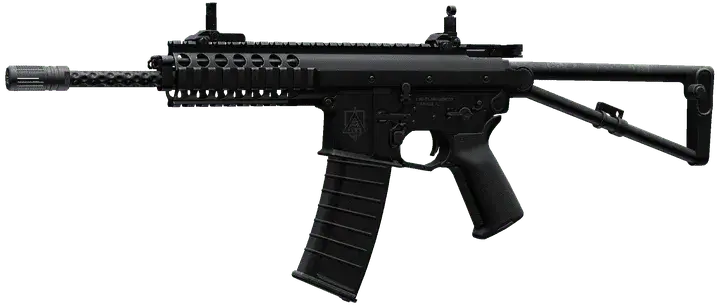
Knights Armament PDW
Caliber: .300BLK
Trader: Mechanic
World Spawn: Woods
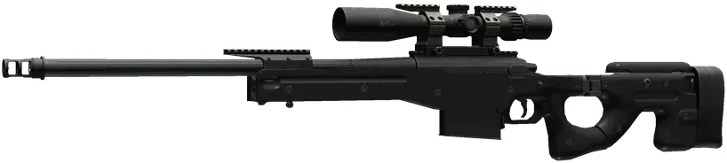
M700 XL-Action
Caliber: .338 LM/ .338 Norma
Trader: Jaeger
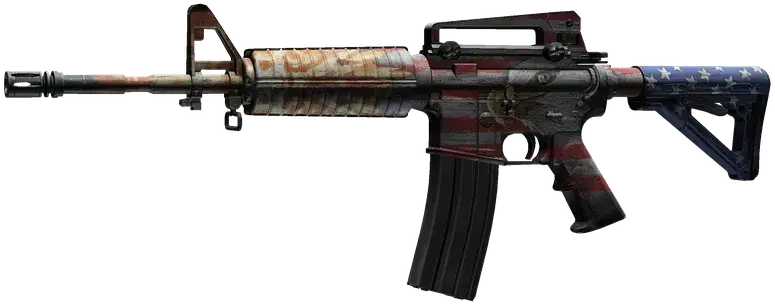
Patriot
Caliber: 5.56x45mm
Trader: Skier
Quest Locked
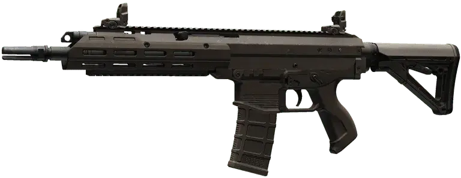
Remington ACR
Caliber: 5.56x45mm
Trader: Skier
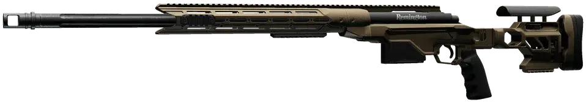
Remington MSR
Caliber: .300 WM
Trader: Skier
World Spawn: Lighthouse
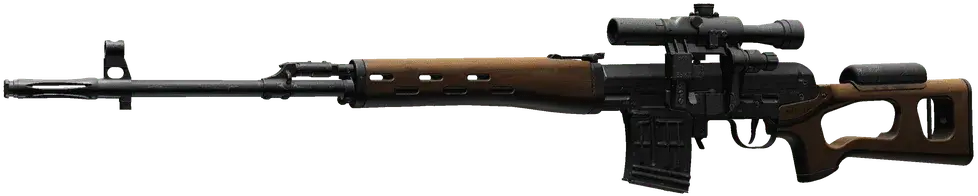
SVD Dragunov
Caliber: 7.62x54R
Trader: Prapor
World Spawn: Woods
Unique Boss Variant Exists
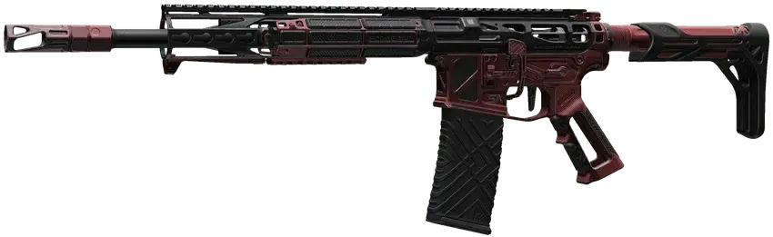
Wages of Sin Skeletonized AR-15
Caliber: 5.56x45mm
Trader: Skier
World Spawn: Reserve
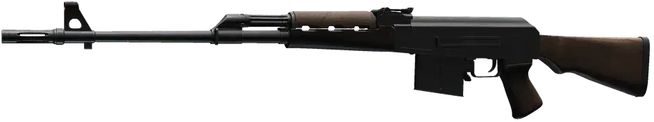
Zastava M76
Caliber: 7.92x57mm
Trader: Skier
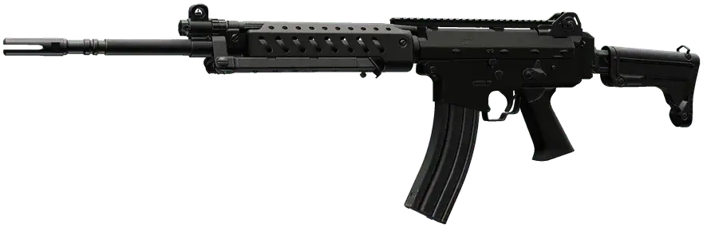
Bofors AK5G
Caliber: 5.56x45mm
Trader: Peacekeeper
Quest Locked
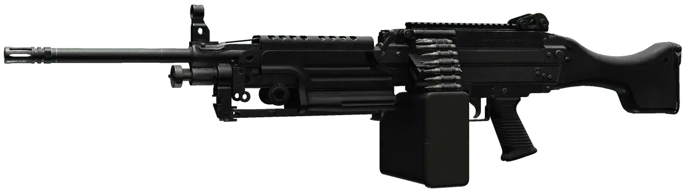
M249 SAW
Caliber: 5.56x45mm
Trader: Peacekeeper
World Spawn: Customs
Quest Locked
Official M249 video by our very talented Moxopixel
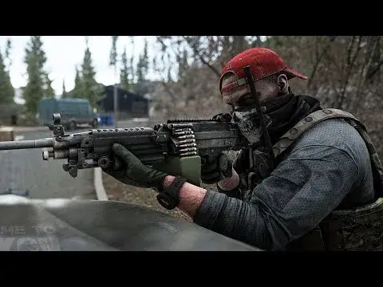
The Heavy Hitters of WTT- Armory
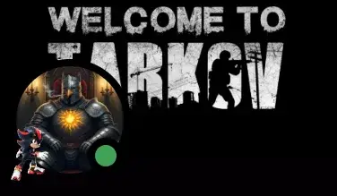
GrooveyPenguinX - Founder and Lead Developer of Welcome To THE CITY
An actual human wizard. The man behind the curtain who is creating our tools, creating and maintaining the codebase, and saving the asset creation world of SPT with actual magic. He was the author of the WTT Bundle Master- the tool that allowed porters to port 3.10 asset mods to 3.11 and asset modders to continue modding custom assets into the game before the SDK was ready and working. He’s also the author of WTT - W.A.A.C , WTT-PackNStrap, WTT - Lost Heads of Yojenks, WTT - Rogue Justice, and the original Small Cases mod.
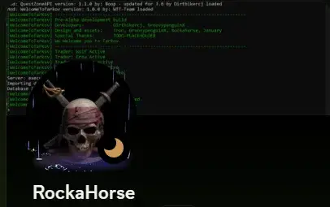
Rockahorse - Founder and Lead Designer of Welcome To THE CITY
The man behind the lore and overall story of WTT. With one of the biggest creative brains on the team, this man brings our custom bosses, traders, and quests to life while seamlessly integrating them all into a cohesive plot design. Rockahorse was the author of WTT - Corner Store and WTT - Up In Smoke.
Tron (Myself) - Founder and Lead Asset Developer for Welcome To THE CITY
I’ve just gotten really good at memorizing what buttons to push to make nice looking, shiny objects that go boom. The WTT Armory series began over a year ago with my individual weapon mods that would go up on “WTT-Thursdays”.
EpicRangeTime - Senior Asset Developer
A heavy hitter in the department of attachments, he’s known for Epic’s All In One and WTT-Taste The Rainbow, he has become our resident expert at making optics and tactical devices, along with superior knowledge in making transparent attachments. He’s an awesome asset scout and has become my right hand guy in finding the best available assets that we can get our hands on. He’s also become our main sound designer, making our weapons sound that much better in the world.
WTT’s RISING STARS
These guys have really stepped up to the plate for this project and so this area is devoted to them.
Dsnyder - WTT Balancer turned WTT Developer
Dsnyder joined the team originally to help balance weapon pricing for the main WTT project. Over time, he began to expand into many other roles, including asset creation, helping tackle creation of meaningful trader assorts for the actual WTT overhaul, and much more. For Armory, he stepped up to the plate, hammering out all of the trader assorts for our weapons and also had a major role in placing loose loot weapon spawns in the world. Dsnyder continues to expand his skillset and has become one of my partners in asset creation. I look forward to getting him more involved in the asset creation process as time goes on. He is the author of the Unknown Survivor - Trader Mod .
Pidgeon - WTT Intern turned WTT Developer
Originally a WTT intern who has become a full on WTT developer. One of the few individuals to create a weapon container by himself, without DMing me a single time ( and lived to tell the tale…barely). With skills in hard surface modeling, he can create things out of thin air. Pidgeon was all over the board helping in different areas of Armory, from managing bug requests, to stat balancing, to planning for the project as a whole. We look forward to to working with Pidgeon as he develops his skills in asset creation.
Pois1x - WTT Community Volunteer Balancer turned WTT Developer
Originally a WTT Armory volunteer balancer who we chose from our community to help us balance our weapons. He has now become a full on WTT member. Pois1x was responsible for finding a discrepancy in the way our ironsights were being created. Fixing this issue led to most of our guns feeling a lot more natural to use. In addition, he’s responsible for balancing a majority of the weapons in WTT Armory. We look forward to having his assistance and balancing brain for the main project.
ProbablyEukyre (Victim Of SPT Staff) - WTT Intern turned WTT Developer and WTT Staff
Originally a WTT Intern who has become a full on WTT developer. Eukyre aka “Towel” , was my right hand man for tackling bugs during the Official WTT Armory beta test. His fastest bug fix came in at a hot 24 seconds flat from diagnosing the issue to sending the fix to our Armory github repo.
He’s also the author of ECOT - Eukyre’s Consortium of Things. He continues to learn and perfect his skills in asset creation, and is looking forward to helping develop WTT as time goes on.
The following individuals played an important role in WTT Armory through asset creation, media creation, or Beta Testing. This area is devoted to them.
Choccy - The modder responsible for our M249 custom animations. We are proud to have had the opportunity to collaborate with this animation wizard.
Fontaine - The SPT Realism man himself serves as an internal advisor to WTT. He also created the BepInEx plugin that allows the AN94 to have proper hyperburst!
Acer - Our media expert who diligently provided us with beautiful artwork for our official hub submission. A lot of the art work you see here was created by him!
Check out his awesome community where he showcases some of his crazy talent in creating weapon and vehicle rigs.
Kobalt - A volunteer community balancer who helped balance some of the weapons in WTT Armory. Thank you Kobalt!
Beta Testers
Pluto! - Lead beta tester and creator of Echoes of THE CITY
Hazel - DevRaccoon
Beefyonyt
dalamadur
devliflippy
dezoz
foxxee
gbtonzee
kiyuno813
odyssa
onedeag
starvox
trenchfoot
turok (only slightly better than community member)
mrmod
bauhinia_k
.floydthebarber
Jeri_
IrnBruWolf
lnfinituz
chaoscupcake.
Balathor
xeno5225
Eco
avari_
Toka
Jed16338
spec_ops_mexican
SecretAszianMan
bazsa1989
Rwbster
theblindguy00
bobinstien
den_cheesecake
SLEEPER6744
Jaysteeze508
pmghost98
Rexana
icpmcp
Peuchot
RainingMeta
Hoppydays
aaronwhite1786
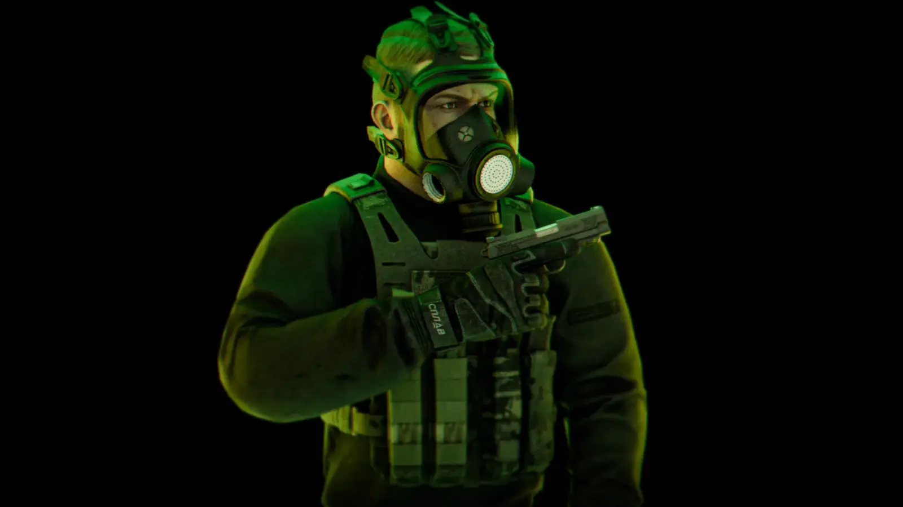
A full list of the incredible individuals who make up the full WTT Development Team
WTT Project Leads
GrooveyPenguinX - Founder & Lead Developer
RockaHorse - Founder & Lead Designer
Tron - Founder & Asset Lead
EpicRangeTime - Senior Asset Developer
WTT Active Developers
Fontaine - Internal Advisor & Special Projects Client Coder
Krackasourus - Asset Developer
Moloc- Balancing Dev
MoxoPixel - Asset Developer/ Graphics & Media Specialist
Pein - Client Coder/ Asset Developer
Pidgeon - Asset Developer
Pois1x - Balancing Dev
ProbablyEukyre - Asset Developer/ Balancing Dev/ Graphics & Media Specialist
QwertyAlex- Asset Developer/ Client/Server Coder/ Unity Specialist
Snyder - Asset Developer / Balancing Dev/ Designer
Wireman - Asset Developer
Legacy WTT Members
Crackbone
Gamma
ItsReaperGirl
Lord_Noodal
MadManBeavis
Okaoka21
Panikk
Senara
Sianyde
SSH
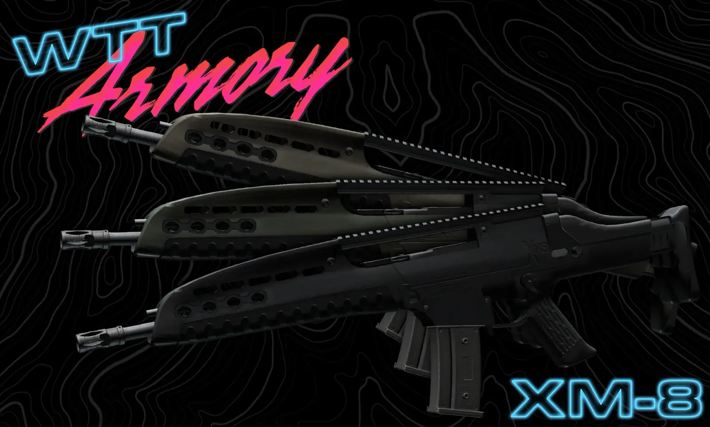

What is Welcome To THE CITY?
Welcome To THE CITY (WTT) is a mod for SPT AKI that has been in development for over a year. What started as a small passion project has grown in size to incorporate 15+ core members as well as contributions from other well-known mod authors and friends of WTT alike.
How does Welcome To THE CITY change the game?
As a mod, WTT overhauls SPT AKI, touching on almost every vanilla game system, as well as adding completely new systems to the game and its core mechanics. Inspired by open-world hardcore survival projects like STALKER: Anomaly and STALKER: GAMMA, WTT takes SPT’s artificial multiplayer MMO difficulty adders and replaces them with a challenging world economy, loot scarcity rebalancing, a lore friendly quest overhaul, and a map-traveling system built from rewritten portions of the Traveler mod allowing seamless travel between maps. Aside from its changes to the game’s core properties, WTT also adds to the world’s variety of traders, NPC’s, characters, items, and quests:
- Over 1,000 custom bundles adding new weapons, attachments, wearables, containers, food, medical, and barter items.
- New bosses with their own custom gear that will be properly incorporated into WTT’s quest lines.
- New, meaningful traders with their own lore-friendly quests and narrative elements to help the player progress through the story-line of WTT.
- New playable characters and outfits that will add to the player’s customization abilities.
- New quest types incorporating brand new map extraction points, putting the player’s knowledge and familiarization of SPT’s maps to the test.
Welcome To THE CITY stands as one of the largest mods created for SPT AKI thus far.
When does Welcome To THE CITY release?
Thursday.
Which Thursday?
TBD
Want to follow our progress?
You can follow the project through it’s development in our discord here:
Version
2.0.5
-Fix for MSBS Grot stock angle
-Added cubemaps to multiple weapons and attachments
-Various bundle tweaks/optimizations
-Fixed bundles.json to include some missing quest bundles
-Fixed various locales
Dependencies
Version
2.0.4
For SPT ~4.0 ONLY
-
Updated postdbmodload order to be +2
-
Fixed Masada sizing
-
Fixed MSBS Grot sizing
-
Removed unused slot on SA1 Prototype
-
Removed attachment slot from upper rail of F2000
-
Fixed more locales
Dependencies
nuked from forge, try source code url
Version
2.0.3
For SPT ~4.0 ONLY
New Content from Eco (WTT’s newest virtual gunsmith) :
- Added F2000 (Black and FDE)
- Added MSBS Grot (Black and FDE)
- Added SA-01 Prototype
Bug Fixes:
- New weapons added to quests
- Bigpipe’s bot loadout fixed
- Valmet magazines no longer can be used in other weapons.
- Corrected grip position on A545
- HK USC selector position fixed
- MSR pistol grip properly pushed to MSR container.
- More locale fixes
Dependencies
nuked from forge, try source code url
Version
2.0.2
Hotfix: Fixes bundle path issue for A545.
Dependencies
nuked from forge, try source code url
Version
2.0.1
For SPT ~4.0 ONLY
Mostly a hotfix/ balancing pass.
Fixes
-
New weapons added to quests
-
M200 bolt cycle animation smoothing
-
Numerous locale fixes
-
Fixed missing Wages of Sin sounds
-
M249 scope bone renamed
-
Proper mastery system enabled for Marlin Dark Tracker and Ruger 57
-
Added tactical slot to Magpul Masada receiver
-
.408 cheytac rounds no longer fit in .338 weapons/magazines
Balancing
- XM109 25x59 grenades balanced
- Rebalancing of XM109 and M107A1
New Content
-
A545 5.45x39 Rifle added - THANKS TO ECO!
-
HK USC .45 ACP carbine added
Happy New Years!
Tron
Dependencies
nuked from forge, try source code url
Version
2.0.0
FOR SPT VERSION ~4.0 ONLY
New Content:
Weapons
-
Added PMM12 and associated attachments
-
Added M78 and associated attachments
-
Added Cheytac M200 Intervention
-
Remastered Remington ACR -> Now Magpul Masada
-
Remastered HK XM8
-
Added SV98M
-
Added Henry Big Boy Steel .357 Lever Action Rifle
-
Added Pit Viper
-
Added UMP 9
-
Added Colt RO991
-
Added Ruger 57
-
Added PSA Rock 57
-
Added Marlin 1894 Dark Tracker .44 Magnum Lever Action Rifle
-
Added Barrett M107A1
-
Added Barret XM109
Achievements
- Added custom achievements
Quests
- New quest to unlock Barret M107A1 trader assort
Bug Fixes:
-
Remington MSR Dual-Port muzzle brake no longer accepts attachments
-
CZ Scorpion scope position corrected.
-
Fal 65 round drum locale fix - description changed to 60 rounds instead of 65
-
Quest fix - nostalgia - rep is now 0.04 instead of 0.4
To Do:
HK G3 removed for Armory 2.0. It will be remastered in the next update.
Happy Holidays from the WTT Team!
Dependencies
nuked from forge, try source code url
Version
1.2.1
Please remove any previous installations of WTT Armory before installing this update.
Small hotfix that addresses the following bugs:
- Arisaka json removed. It was accidentally included. The actual weapon will appear in a future update. PLEASE REMOVE ARISAKA FROM YOUR PROFILE/STASH/PMC before installing the new update.
- MK23 rear iron sights adjusted for better camera control
- HK HK417 muzzle brake handbook parent ID fix
- Potential fix for AXMC 300WM bot loadout generation error
- HK 417 handguards properly added to filters
Anti virus has been finicky and now appears to be flagging our DLL occasionally. The DLL file hasn’t changed since Armory version 1.0.
VirusTotal Link has been provided on our page.
Thank you all for the bug reporting and the support! -WTT Team
Version
1.2.0
v 1.2.0 for SPT 3.11 ONLY
Added Content:
Added MK23 and associated attachments - available at Peacekeeper and Mechanic
Added AG-042 and AG-043 assault rifles - available at Prapor and static world spawn on Ground Zero
Added custom gas tube to the Zastava M76 - it can now use some AK handguards. - You can thank our very own QwertyAlex for this one.
Added Beretta 92FS custom compensator - Mechanic
Added HK417 handguard upgrades - You can thank Mr. Eukyre for these!
Added VSS-M “Ublyudok” integral barrel-suppressor as part of the on-going VSS-M kit that Eukyre is making.
Balancing Changes:
- 8mm Mauser has been buffed
- .300 WM has been buffed
- .338 Norma Magnum has been slightly buffed
- Hi point C9 selling price slightly reduced.
Bug Fixes
- Weapons now count towards base game quests
- Fika F8 Extract Bug fromWages of Sin audio bank error has been fixed. - TY to Kobe Thuy for helping us narrow down the error and correct it!
- AXMC .300 WM locale fixes
- CZ Scorpion bolt-release animation transition smoothed
- AEK 971 magazine check animation smoothed
- Zastava M76 now properly takes PSO scopes and other dovetail mounted optics
- Tavor X95 9mm SMG magazine check animation clipping fixed
- Added Leupold Mark IMS 35mm ring scope mount to Surgeon bolt-action rifle filters
- Added Ase Utra Borelock .338LM muzzle device to Surgeon bolt-action rifle filters
- Added CZ Scorpion 20 round transparent and 30 round polymer magazines to Skier assorts
- Patriot sounds overhauled
- PM9 no longer has incorrect foldable parameter
Thank you all for the bug reporting and the support for WTT.
Happy WTT Thursday!
- From the WTT Team
nuked from forge, try source code url
Version
1.1.0
V 1.1.0 for SPT 3.11 ONLY
Added Content:
- Accuracy International AXMC .300 WinMag added by ProbablyEukyre
Sold at Jaeger LL3
Balancing Changes:
- M249 accuracy slightly reduced, recoil slightly increased, ergonomics slightly decreased
- XM8 barrel balancing (all barrels had the same stats originally)
- .300 Winmag cartridges slightly buffed.
Bug Fixes:
- CZ Scorpion locale fixes
- Aimpoint CS fix for frosted lens
- Handbook Parent ID fixed for HK G3SD suppressor
- Removed unused ID in IWI Carmel filters
- The new NATO stanag magazines are now correctly set to be incompatible with G36 magwell
- X-95 weapon masteries fixed
- Weapons that were missing mastery points now have point requirements
- Removed quotes around weight values in items.json
- Camo SVD Dragunov attachments are available on flea again (the main weapon itself is not since it’s a boss variant)
- Jaeger quest to handover item - fixed item turn in for CSS charging handle ( should have been obzor reflex sight)
- Fixed X95 magazine anim clipping
- Fixed IWI Carmel magazine anim clipping
- Fixed CZ Scorpion 20 round magazine animation index
- Added caliber parameter to 8mm mauser rounds
- Fixed condition error for “Weapons Trial: PMCS” quest
- Various writing issues fixed on Peacekeeper quest assorts
- Remington ACR locales overhauled
- LAR grizzly compensator handbook parent ID fixed
- 6L50 - 50 round AKM magazine now sold on flea market
- False Flag quest locales fixed and quest can now be restarted upon death
This update should fix a majority of the bugs that everyone’s outlined in the past 2 weeks. Thank you all for the reporting and the support
nuked from forge, try source code url